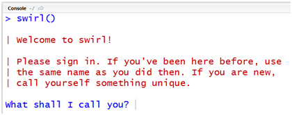

4 Swirl
Swirl diğerlerinden farklı olarak isterseniz R derslerini öğrenebileceğiniz isterseniz ders olşturup insanların bu dersler sayesinde R konularını öğrenmelerini sağlayabileceğiniz freamworktür.
4.1 Gereklilikler
RStudio’yu açıp konsol kısmına aşağıdaki komutu yapıştırarak gerekli paketlerin kurulmasını sağlayabilirsiniz;
Dersi öğrenmek için;
install.packages("swirl")Ders oluşturmak için;
install.packages(c("swirl", "swirlify"))4.2 Başlangıç
4.2.1 Dersi Öğrenmek İçin
Ders öğrenmek için;
library(swirl)kütüphanesini etkinleştirdikten sonra
swirl()kodunu çalıştırarak dersi aktifleştirelim ve içersindeki dersi öğrenmeye başlayalım. 
4.2.2 Ders Oluşturmak İçin
Gerekli paketleri indirdik ve şimdi ders oluşturmamız gerekiyor. İlk olarak “swirlify” kütüphanesini aktif hale getirmemiz gerekiyor.
library(swirlify)Kütüphane aktifleştirmede bir sıkıntı yoksa sırada dersimizi oluşturmaya geldi. “new_lesson()” komutu ile yeni ve ham bir ders oluşturabiliriz.
new_lesson("KursunAdi", "DersinAdi")şeklinde dersimizi oluşturabiliriz. Bu komutu aktifleştirdikten sonra aşağıdaki gibi bir dosya sistemine sahip olacağız.
─ DersinAdi
└─ KursunAdi
├─ lesson.yaml
├─ initLesson.R
├─ dependson.txt
└─ customTests.RPeki bu dosyalar içerisinde neler yer alıyor.
lesson.yaml: Soruların yazıldığı alan burasıdır. Sorular yazılır eğer tanımlı ise bir fonksiyona yönlendirilir veya kendi içerisinde basit bir şekilde değerlendirilir.
initLesson.R: Genellikle veri yüklemek veya çevresel değişkenler oluşturmak için kullanılan ders başlamadan önce çalışan bir R betiğidir.
depenson.txt: Bir veriyi tanıtmak için kullanılan R betiğidir.
customTests.R: Öğrencilerin cevapları için kendi testlerinizi yazabileceğiniz yerdir.
4.3 Düzenleme
4.3.1 Dersi Öğrenmek İçin
Gelen paket içerisindeki dersler yetersiz geldiğinde aşağıdaki kodu kullanark yeni ders ekleyebilirsiniz.
library(swirl)
install_course("Kurs_adi")
swirl()Eğer dersi indirdiyseniz;
library(swirl)
install_course_zip("path/to/file/here/dosya_adi.zip", multi=TRUE,
which_course="Kurs_adi")
swirl()ve dersi kaldırmak için;
uninstall_course("Kurs_adi")4.3.2 Dersi Oluşturmak İçin
4.3.2.1 Lesson.yaml
Yukarıda bahsedildiği gibi soruların ve cevapların yer aldığı bölüm aşağıdaki şekilde düzenlenir.
- Class: cmd_question
Output: R konsolu içerisinde 2 ve 2 sayılarını toplayınız.
CorrectAnswer: 2 + 2
AnswerTests: omnitest(correctExpr='2 + 2')
Hint: Just type 2 + 2.4.3.2.2 depenson.txt
Bu alanda düz metin olarak fonksiyonlar hakkında bilgi verebilirsiniz.
Bu fonksiyon ..... işlemlerini gerçekleştirmektedir.4.3.2.3 initLesson.R
Bir R betiğinde olduğu gibi değişkenlerinizi ve verilerinizi ekledeğiniz bölümün örneği aşağıdaki gibidir;
library(dplyr)
# Sayı aralığı
.ng <- 5
#Öğrenciler/Gruplar için maksimum değer
.gmax <- 8
# Kolon başlıkları değerlerdir, değer isimleri değil
set.seed(1234)
students <- data.frame(
grade = LETTERS[1:.ng],
male = sample(0:.gmax, .ng, replace = TRUE),
female = sample(0:.gmax, .ng, replace = TRUE)
)4.3.2.4 customTests.R
Kendi fonksiyonalrınızı oluşturacağınız bu bölümde topladığınız verileri işlemler ile beraber çalıştırarak aldığınız sonuçları kullanıcıya döndüreceğiniz dosyadır. Örne olarak;
# Bir kullanıcının komuta göre doğrudan girdiği veya hesaplandığı veriyi alın
getVal <- function(){
getState()$val
}4.4 Yayınlama
Kendi dersinizi oluşturdunuz ve artık bunu öğrenmek isteyenlere sunmak istiyorsunuz o halde dersi bir dosya halinde nasıl çıktı alacağımıza bir bakalım;
set_lesson()bu komut ile dersinizi ayarlamanız gerekiyor daha sonra
pack_course()komutu ile .swc uzantılı bir dosya oluşturduk. Bu dosyayı normal bir dosya gibi paylaşabilirsiniz ve ihtiyacınız olduğunda install_course() komutu ile dersi çalıştırabilirsiniz.